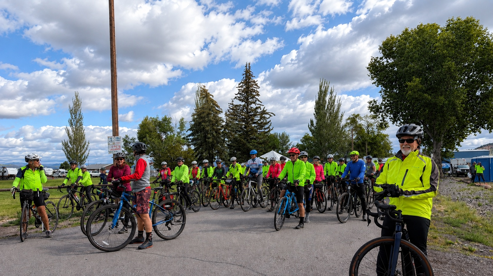
2026 Tour de Outback: Ride Recap
This year's Oregon Tour de Outback pulled in 174 registered riders, up from 161 in 2025, and 145 of them rolled out from the Lake County Fairgrounds on June 27th behind an Oregon State Police escort, up from roughly 110 riders who actually rode the year before. They came from Oregon, California, Idaho, Washington, Nevada, Massachusetts, and beyond, for five routes through the high desert, two nights of live music, a bobcat sighting, and weather that felt almost gentle compared to what 2025 threw at everyone.
If you rode it, this is your souvenir. If you didn't, here's an honest account of what you missed, and why the 2027 date, June 26, is worth putting on the calendar now instead of waiting to see next year's photos.
Friday Night at the Fairgrounds
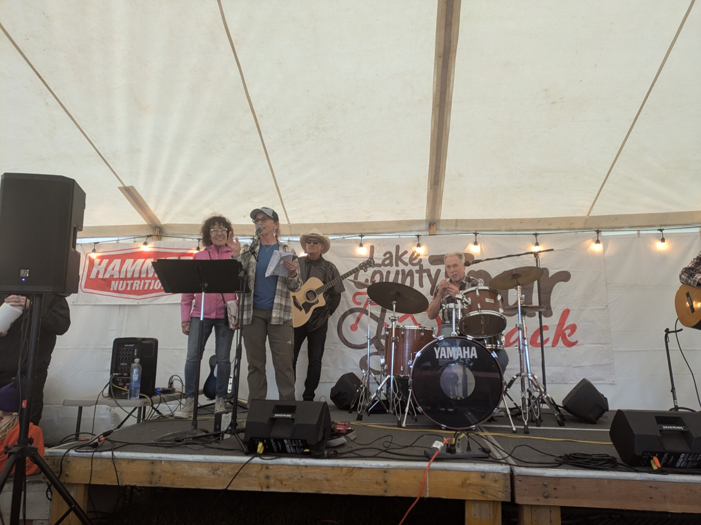
The event starts a full day before anyone clips in. Friday afternoon is packet pickup and a warm-up ride to shake out travel legs, followed by a beer garden that opens mid-afternoon and doesn't let up until the pizza comes out. Downtown Café and Bakery catered this year's Friday pizza party, and Tall Town Sound played the event tent well into the evening while riders swapped stories about routes they hadn't ridden yet.
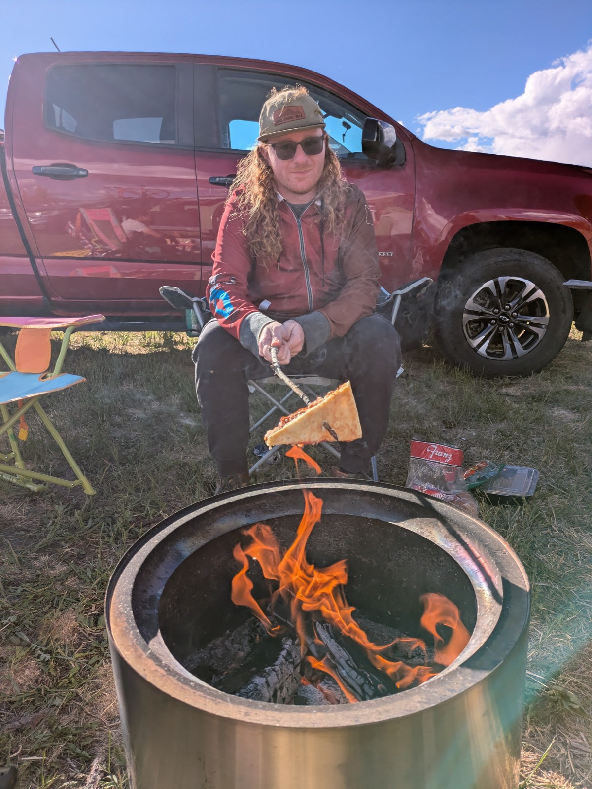
Bryce made it to the pizza party just like everyone else, but he wasn't about to let good pizza go to waste. He saved the leftovers and barbecued them over a campfire out in the RV loop the next night, which is its own kind of tradition by now. By the time the raffle and announcements wrapped up Friday, most of the fairgrounds had gone quiet, save for a few stragglers determined to get one more lap of the beer garden in before an early wake-up call.
Saturday, Rolling Out
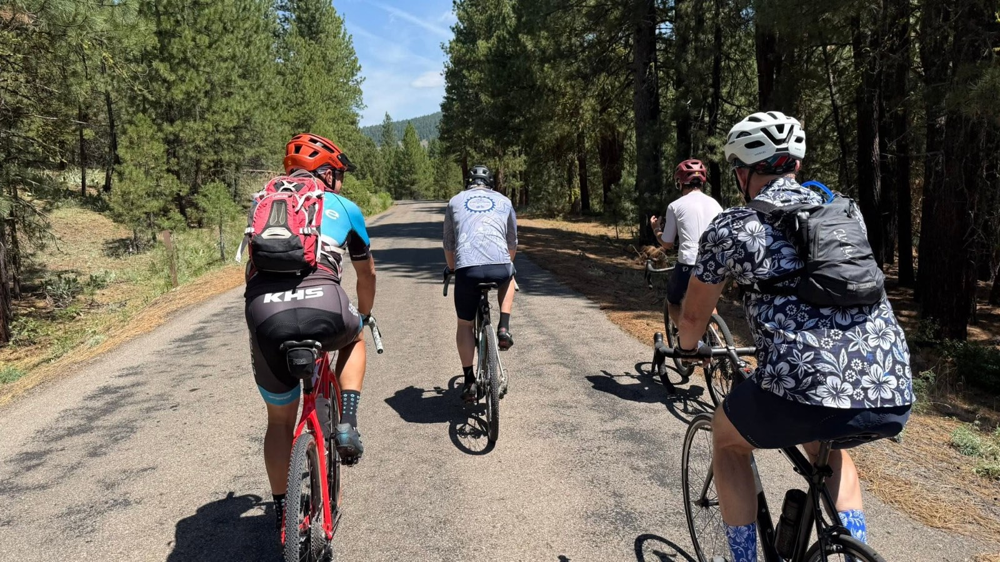
Ride day starts early and stays organized. At 7:10 a.m. on June 27th, an Oregon State Police escort led all five routes out of the fairgrounds together before they split off toward their own distances. Watching 145 riders funnel out of the fairgrounds and onto Lakeview's main street that morning is one of those moments photos never quite capture, though people keep trying. Skies stayed partly cloudy through the day, with a steady 20 mph wind and highs only reaching the upper 50s, jacket weather for late June.
Five Routes, One Wild Landscape
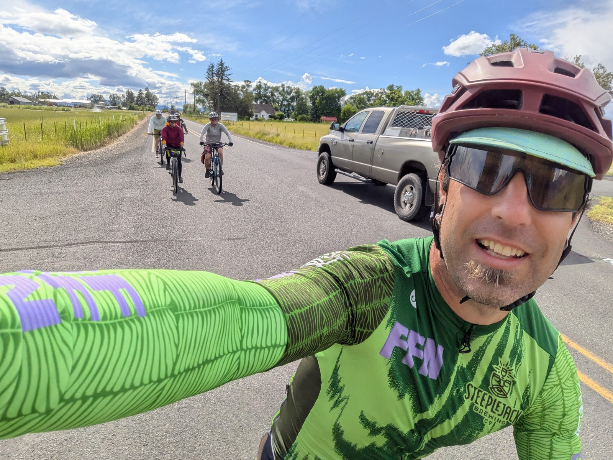
Tour de Outback earns its name honestly. This year's road routes ran a 36-mile short loop out to the snow park near Camas Valley, a 44-mile route to Mud Creek in Bull Prairie, and a 93.6-mile haul out to Plush and Adel on the Oregon Outback Scenic Bikeway. Gravel riders picked between a 36-mile short option and a 49-mile route through Bullard Canyon, Rogger's Meadow, and South Warner Road before looping back through forest. Every route carried aid stations and SAG support, which matters more than it sounds like it should once you're thirty miles into sagebrush country with the nearest town an hour behind you.
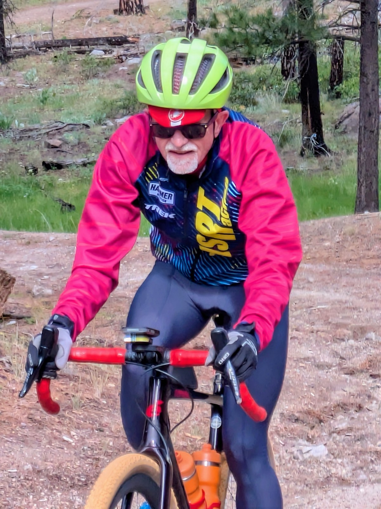
Brad Newman drove down from Vancouver, Washington, for the medium route and came back grinning about the climbing. "The ride I took this year had a lot more climbing than the Adel route last year," he said. "Perfect for metric century climbing. I enjoyed the scenery with forests and mountain peaks. I even saw a bobcat." Jason Caron, on the long gravel route, put it simpler: "Just gorgeous. I loved it. The scenery included wildflowers everywhere and the roads were in excellent condition, great for a fun, fast ride." Rick Marshall came down from Bend for his first Tour de Outback and rode the 49-mile gravel route. "The route was well marked," he said. "I love Lakeview's support from the local community."
Big Sky, Easy Weather
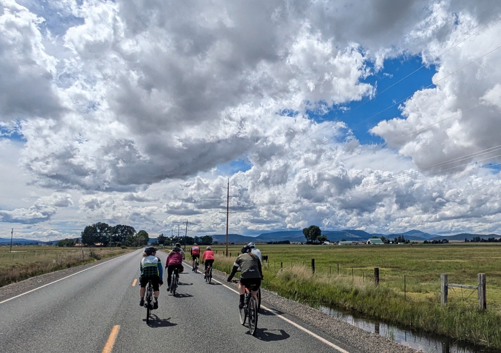
2025 was rough on riders, plain and simple. This year was a different story. "It's a bit cooler than I'm used to," said first-time rider Megan Roberts after finishing the medium route, "and then I heard that last year's ride had rain, sleet, snow, strong winds and temperatures that didn't even reach above 50 degrees. So I'll consider this a great ride." Clouds built up dramatically over the mountains more than once during the day without ever turning into real weather, the kind of sky that stops riders mid-pedal for a photo, minus the mud and soaked gloves of the year before. One photo of that exact sky turned out good enough to win this year's Photo Contest.
Photo Contest Winners
Every year riders submit their best shots from the road, and with 174 people out there this year, it got harder than ever to pick winners. This year the field came down to two photos, and both earned the win outright.
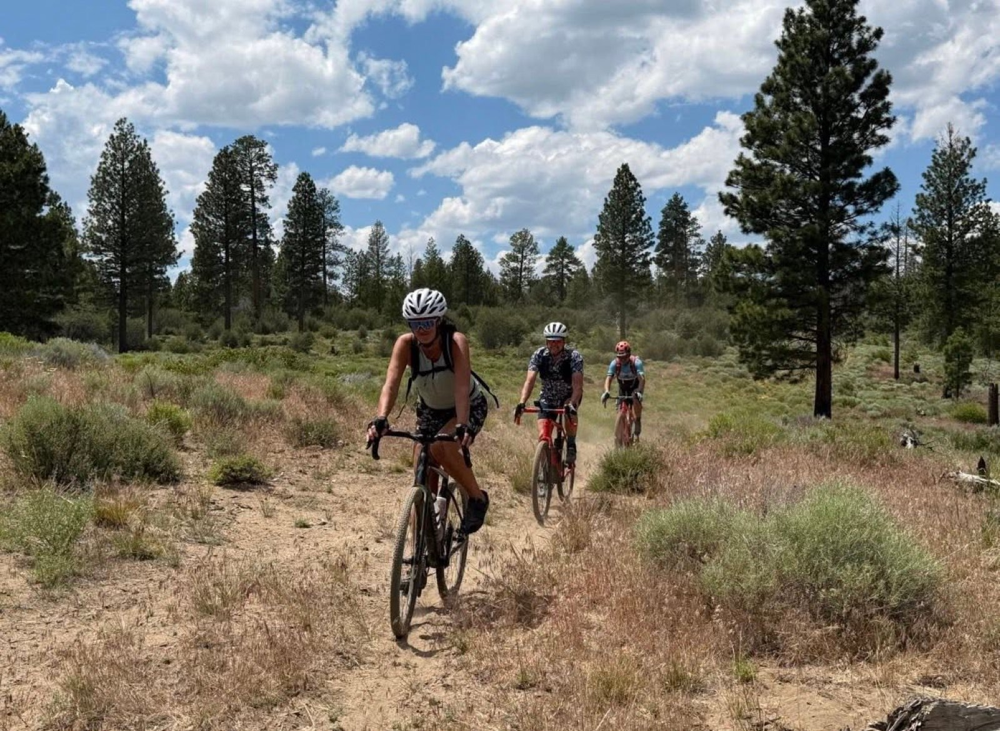
Jill Mulder
Dust, shadow, and a pace line that keeps rolling through a stand of ponderosa pine — this shot captures exactly what the gravel routes feel like from inside the pack.
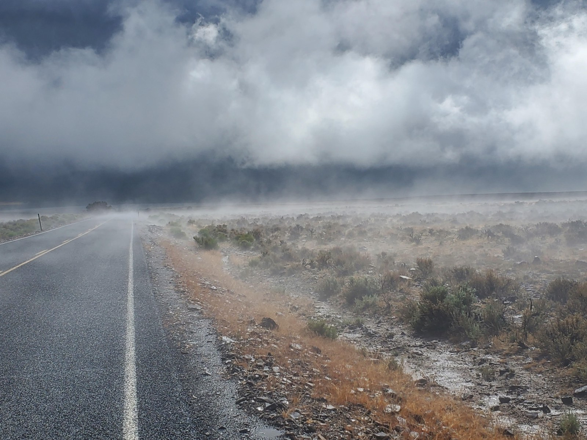
Michael Fitzsimmons
Caught at the exact moment the clouds rolled over the road ahead, a shot that says more about riding in the Oregon outback than a paragraph ever could.
Congratulations to both of this year's winners, and to everyone who submitted a photo. Picking just two never gets easier.
Land That Steals the Show
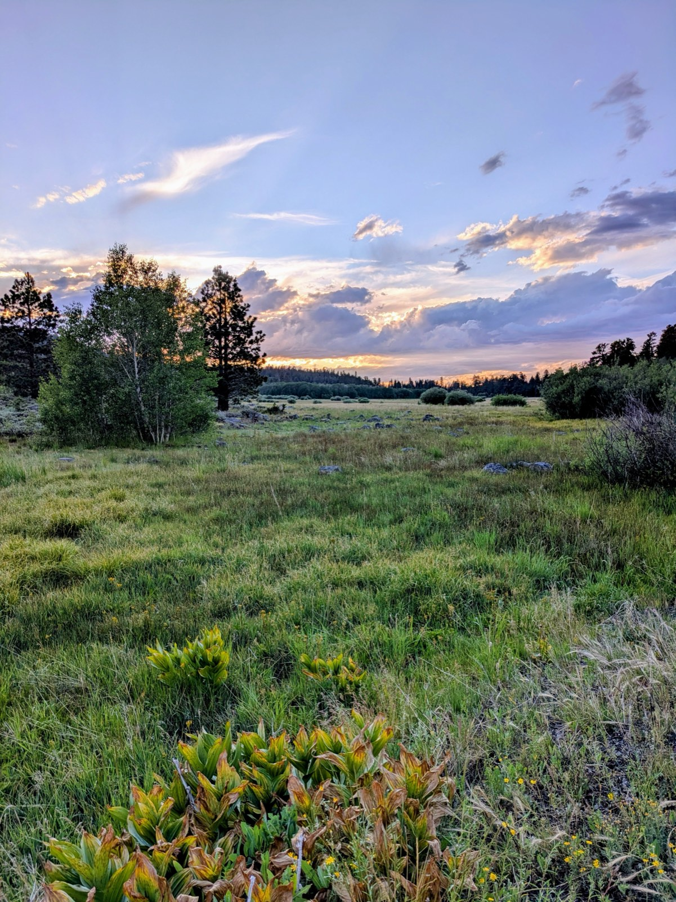
Between the routes and the wind, Lake County kept doing what it does best: making riders stop pedaling just to look at something. Sunset over a meadow near the mountains turned the sky the color of a campfire, and roadside wildflowers that riders like Jason Caron kept mentioning were out in force the whole day. It's the kind of scenery that turns a training ride into a memory, whether you're grinding up the century route or coasting the short loop back into town.
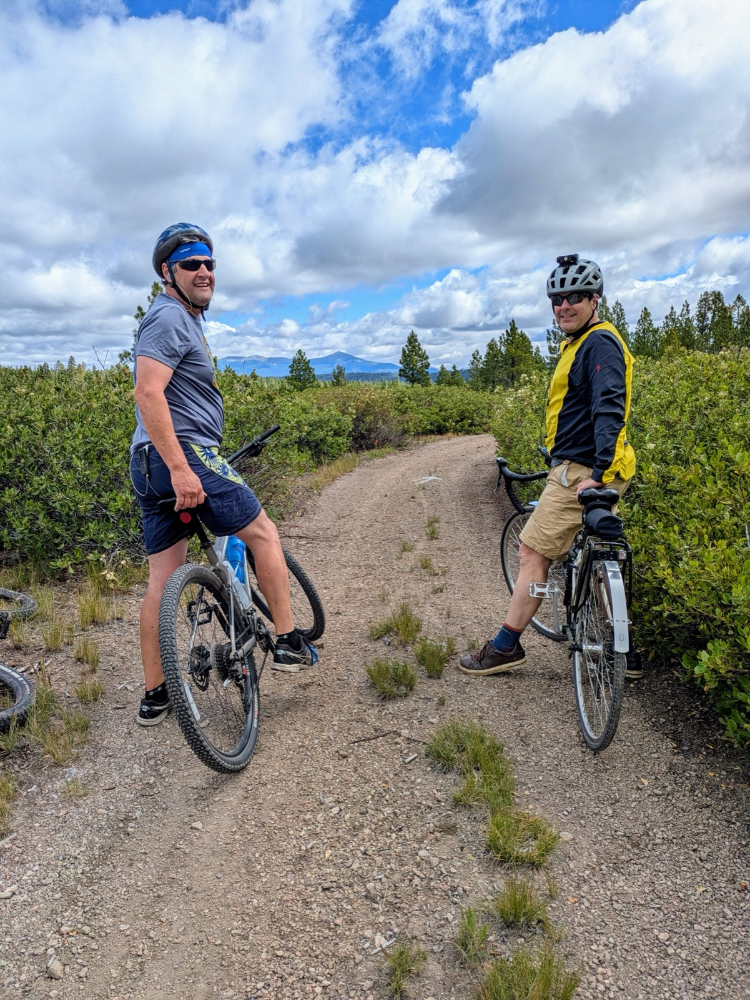
Riders who paused on the overlooks along the gravel routes got the best of it — a few extra minutes off the bike, mountains in every direction, and nothing but wind and birdsong to fill the silence. This is the part of the event that's genuinely hard to describe to someone who hasn't been out here: the emptiness, the color, the total absence of anything competing for your attention. By the time riders started rolling back down out of the high country, the fairgrounds were already filling up with the first finishers, and it's exactly why people who've ridden Tour de Outback once tend to come back for more.
The Finish Line, and What Came After
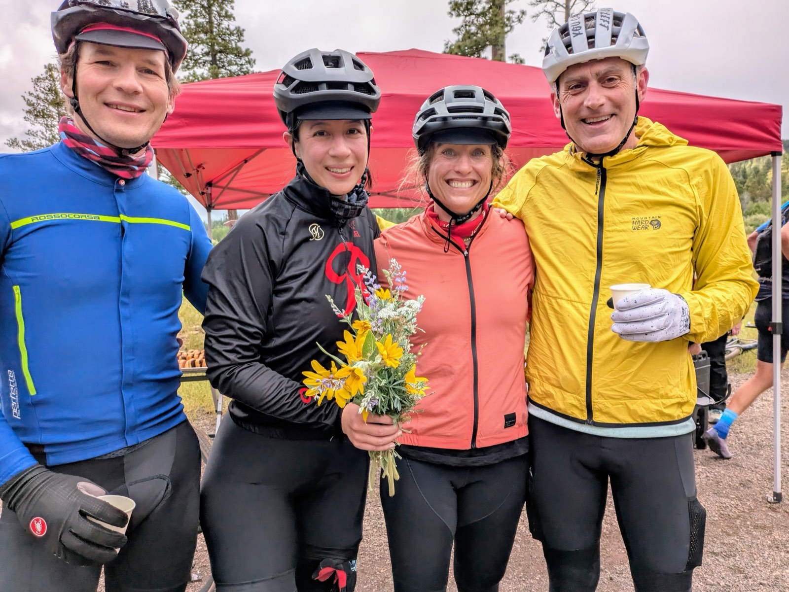
Riders rolled back through the fairgrounds gate through the afternoon, with Lake County Search and Rescue volunteers stationed along every route running water stops and safety checks the whole day. It's an arrangement riders consistently bring up on their own: every registration fee helps fund the same all-volunteer team keeping them safe out there, the crews who answer search and rescue calls across Lake County the other 364 days of the year. No accidents were reported, just a handful of mechanical issues SAG drivers helped sort out on the road. Kurt Spencer, a cattle rancher from Roseburg who rode the short route, summed up why people keep coming back: "It was a fantastic ride. The infrastructure with camping and having everything in one spot, so convenient and organized."
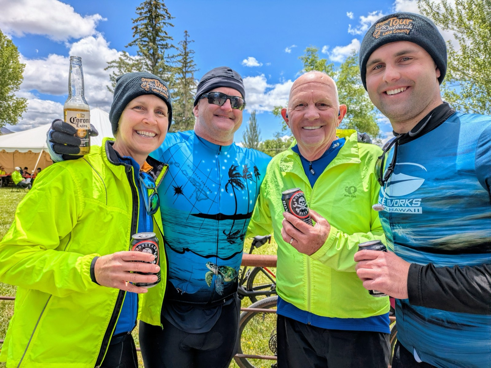
The Southern Oregon Coyote BBQ and pizza truck rolled in from Bonanza for Saturday's post-ride meal, the Honey Bee truck kept the beer and wine flowing, and Missing Identity played the tent into the evening. For anyone with sore legs, Eric Naber of Back to Balance in Portland set up a massage table and worked through a line of riders asking for what he called a "burrito massage," deep tissue relief for a day on the bike.
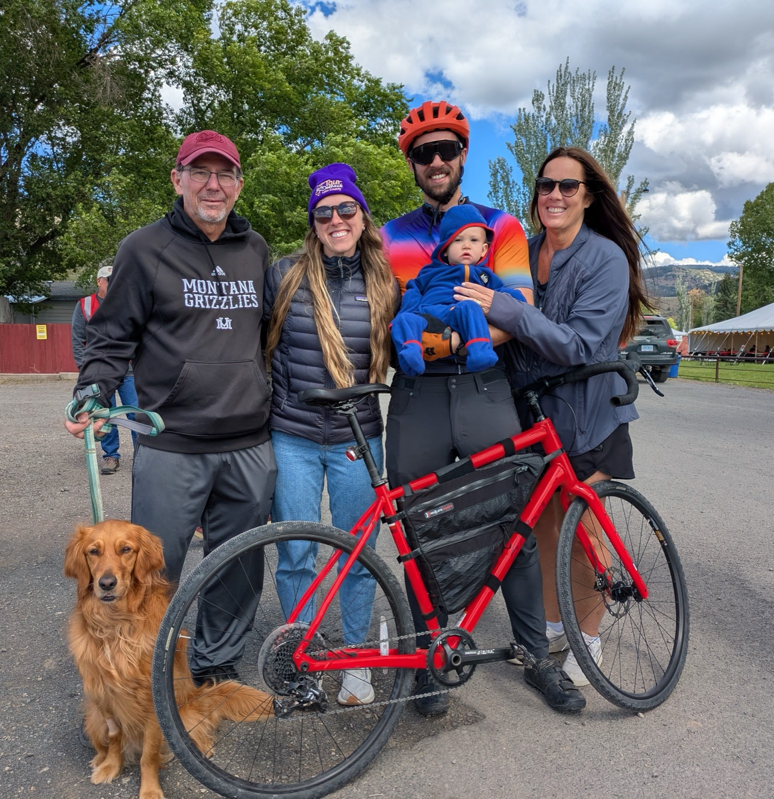
Families showed up too, some on bikes and some just along for the ride, including at least one very patient golden retriever who spent the afternoon posing next to a very red bike while the rest of the family took turns holding the newest member of the crew. Nobody was in a hurry to leave.
Why Riders Keep Coming Back
Take away the routes, the weather, and even the photos, and Tour de Outback still comes down to the same thing every year: a small Oregon town throwing everything it has at a couple hundred cyclists, and a couple hundred cyclists showing up ready to be amazed by it. Riders drove in this year from six states just for the routes. They stayed knowing their registration fee helps fund the very Search and Rescue crews looking out for them at every water stop, live music two nights running, a massage table waiting at the finish, and a community that treats a bike race like a homecoming.
Growth like that, from roughly 110 riders in 2025 to 145 this year, doesn't happen by accident. It happens because the people who ride it once come back, and the people who hear about it decide they don't want to be the ones who missed it again. Next year's edition rolls out June 26, 2027, from the same fairgrounds, down the same big-sky roads. The only question left is which side of that story you want to be on.
Don't Just Read About Next Year
The Oregon Tour de Outback returns June 26, 2027, but registration isn't open yet. Join the email list and we'll let you know the moment it launches.
Get Notified